광학기사 (2020-06-06 기출문제)
1과목: 기하광학 및 광학기기
1. 광선에 대한 설명으로 틀린 것은?
- 광선은 파면에 수직 방향으로 진행한다.
- 광선의 경로는 모든 매질들에서 항상 직선 경로이다.
- 광선은 가상적인 개념이고 빛은 실제로는 그렇지 않다.
- 광선은 한 점에서 다른 점으로 빛에너지가 투과되는 경로를 의미한다.
(정답률: 97%)

2. 굴절률 1.520인 초자로 한 면이 평면이고 다른 한쪽면이 볼록한 초점거리 25cm의 렌즈를 만들고자 한다. 볼록면의 곡률반경을 계산하면?
- r = 8cm
- r = 10cm
- r = 11cm
- r = 13cm
(정답률: 41%)
3. 얇은 볼록렌즈의 전방 20cm 지점에 놓인 물체로부터 나온 광선이 렌즈를 통과한 후 렌즈의 후방 80cm인 곳에 상을 형성하였다. 이 렌즈의 종방향 배율(longitudinal magnification)은 얼마인가?
- 4배
- 8배
- 12배
- 16배
(정답률: 46%)
4. 같은 유리로 만든 초점거리가 각각 f1, f2인 2개의 렌즈를 이용하여 색수차를 제거하고자 할 때 두 렌즈의 간격(d)은?
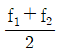
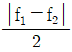
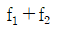
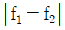
(정답률: 92%)
5. 대물렌즈의 초점거리가 15cm인 망원경이 어떤 물체를 30배 확대시킬 수 있다면 이 망원경의 대안렌즈 초점거리(cm)는?
- 0.5
- 1
- 1.5
- 2
(정답률: 86%)
6. 밤하늘 별의 고도가 실제보다 높게 보이는 것과 하늘이 파랗게 보이는 현상으로 조합된 것은?
- 반사와 회절
- 굴절과 산란
- 회절과 분산
- 산란과 간섭
(정답률: 94%)
7. 유효초점거리가 50mm인 확대경의 물체측 초점에 놓여 있는 물체를 확대경을 통하여 볼 때, 이 확대경의 각배율은 얼마인가?
- 5
- 10
- 50
- ∞
(정답률: 35%)
8. 30mm의 초점거리를 갖는 양면 볼록렌즈(Biconvwx)를 굴절률이 1.5인 유리로 제작하려고 한다. 한쪽면의 곡률반경 R2를 다른 면의 곡률반경 R1 의 3배가 되도록 하려고 한다면 곡률반경 R1은 얼마가 되어야 하는가?
- 5mm
- 10mm
- 15mm
- 20mm
(정답률: 33%)
9. 자이델 수차 중 선명도와 관계없는 것은?
- 색수차
- 구면수차
- 비점수차
- 왜곡수차
(정답률: 32%)
10. 어떤 매질의 광속도가 1.5×108 m/s 일 때 이 매질의 굴절률은? (단, 진공에서의 빛의 속도는 3.0×108 m/s 이다.)
- 1.5
- 1.7
- 2.0
- 2.3
(정답률: 97%)
11. 애플릿넷(Aplanat)이란 어떤 수차가 제거된 광학계를 의미하는가?
- 구면수차와 코마
- 왜곡수차와 코마
- 색수차와 비점수차
- 비점수차와 구면수차
(정답률: 93%)
12. 굴절율 1.5인 유리로 제작된 양볼록렌즈의 곡률반경은 각각 50cm, 10cm 이며, 렌지의 두께가 1.5cm이면 이 렌즈의 굴절능은?
- 4.95 diopters
- 5.⑤ diopters
- 5.95 diopters
- 6.⑤ diopters
(정답률: 45%)
13. 초점거리가 +10cm인 볼록렌즈가 초점거리가 –10cm 인 오목렌즈를 동일 광축 위에 나란히 놓았다. 두 렌즈 사이의 간격이 10cm 일 때, 전체 광학계의 유효초점거리는?
- +10cm
- -20cm
- +40cm
- -40cm
(정답률: 91%)
14. 렌즈의 구경이 100% 증가하고, 화각이 50% 감소할 때 다음 설명 중 틀린 것은? (단, 보기항의 설명들은 광선수차이며, 3차 수차를 기준으로 한다.)
- 종구면수차(LSA)는 4배 증가한다.
- 횡구면수차(TSA)는 8배 증가한다.
- 왜곡수차(%)는 0.25배 감소한다.
- 코마수차는 3배 증가한다.
(정답률: 44%)
15. 초점거리가 10cm인 볼록렌즈에 그림과 같이 각도 10°로 광선이 입사되는 경우에 렌즈의 초점면에서 이 광선이 교차하는 지점의 광축으로부터의 높이(h)는 약 얼마인가? (단, 근축광선이론을 적용하여 풀이하도록 한다.)
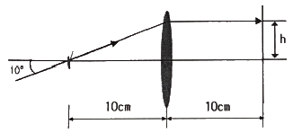
- 0.56cm
- 1.00cm
- 1.26cm
- 1.76cm
(정답률: 30%)
16. 거울앞 10cm에 있는 헤드라이트의 필라멘트의 상을 거울앞 3m의 스크린위에 형성시키려면 어떤 종류의 거울이 필요한가?
- 곡률반경이 19.4cm인 오목거울
- 곡률반경이 19.4cm인 볼록거울
- 곡률반경이 20.6cm인 오목거울
- 곡률반경이 20.6cm인 볼록거울
(정답률: 32%)
17. 초점거리 0.5m인 볼록렌즈 앞 1m되는 곳에 물체가 있고, 볼록렌즈 뒤 2m 떨어진 곳에 평면거울이 있다. 평면거울이 광축과 수직이라면 관측자가 렌즈를 통하여 거울을 볼 때 최종 상의 위치는 렌즈앞에서 얼마나 떨어져 있는가?
- 30cm
- 60cm
- 1m
- 2m
(정답률: 32%)
18. 대물렌지의 초점거리가 10cm, 대안렌지의 초점거리가 5cm이고, 경통의 길이가 15cm인 현미경의 배율의 크기는?
- 3.3
- 7.5
- 30
- 50
(정답률: 87%)
19. 핀홀 카메라에 대한 설명 중 틀린 것은?
- 핀홀의 직경을 크게 하면 노출시간을 줄일 수 있다.
- 핀홀의 직경이 작을수록 f-number가 작아진다.
- 핀홀의 직경이 너무 작으면 회절에 의해 상이 왜곡될 수 있다.
- 촬영된 사진의 크기는 핀홀과 필름사이의 간격으로 결정된다.
(정답률: 92%)
20. 종색수차를 최소화하는 방법으로 옳은 것은?
- 필름을 벤딩한다.
- 비구면 가공을 한다.
- 2매 접합렌즈를 사용한다.
- 중간에 스톱이 있는 대청형 구조의 렌즈를 사용한다.
(정답률: 91%)
2과목: 파동광학
21. 굴절률 1.5인 유리에 어떤 물질을 1층 증착시켜 물속에서 수직으로 사용할 때, 반사율이 최소가 되게 하려고 한다. 굴절률이 어떤 값을 갖는 물질을 증착해야 가장 효과가 크겠는가?
- 1.4
- 1.7
- 1.8
- 2.2
(정답률: 89%)
22. 광학매질들 중 선형편광된 빛이 들어가서 편광 방향이 회전하여 나오는 광할성(optical activity) 물질로 틀린 것은?
- 수정
- 진사
- 유리
- 설탕용액
(정답률: 85%)
23. 홀로그램의 특성으로 틀린 것은?
- 기준파의 위치가 변하면 상의 크기는 변하지 않으나, 상의 위치는 변화한다.
- 홀로그램을 작은 조각으로 잘라내어도, 각 조각은 물체의 온전한 상을 모두 포함한다.
- 제작된 홀로그램을 밀착 인화(contact printing)하면 동일한 성질의 또 다른 홀로그램을 만들 수 있다.
- 기록광 파장의 2배 파장을 갖는 광으로 홀로그램을 재생할 때, 재생된 상의 횡배율의 2배이면 종배율도 2배이다.
(정답률: 82%)
24. 그물망 물체의 스펙트럼에 수직으로 좁은 슬릿을 놓아서 수직방향으로 고차 회절 무늬만을 통과시켰을 때 상표면 A에 보이는 결과로 옳은 것은?
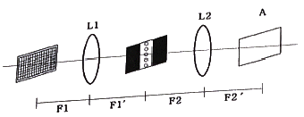
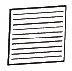
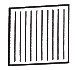
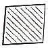
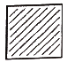
(정답률: 89%)
25. 영문자 A를 영상처리하여 여러 개를 복사하려 할 때 마스크로서 적당한 것은?
- 단일슬릿
- 다중슬릿
- 사각형슬릿
- 원형슬릿
(정답률: 94%)
26. 빛이 광섬유 내를 전파하면서 발생하는 손실량에 대한 설명으로 틀린 것은?
- 손실량의 단위는 통상 데시벨(dB)로 표현된다.
- 손실량은
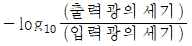
로 정의된다. - 20데시벨은 입력 대 출력의 비가 1 : 1/100 임을 의미한다.
- 30데시벨은 입력 대 출력의 비가 1 : 1/1000 임을 의미한다.
(정답률: 85%)
27. 면적 10×10cm2 인 면 위에 500개의 격자선이 그어진 반사형 회절격자가 있다. 격자 전체 면을 사용할 경우, 1차 회절광의 파장 오차는 얼마인가?
- 파장의 1/5배
- 파장의 1/100배
- 파장의 1/500배
- 파장의 1/1000배
(정답률: 86%)
28. 격자선수가 500 lines/mm 이고, 전체폭이 10cm인 회절격자의 1차 분해능은?
- 25000
- 50000
- 75000
- 100000
(정답률: 87%)
29. 눈을 가늘게 뜨면 흐렸던 물체의 형태가 개략적으로 분명하게 보인다. 이와 관련된 물리적 설명으로 틀린 것은?
- 수차가 줄어들기 때문이다.
- 광량이 줄어들기 때문이다.
- 눈의 초점심도가 길어지기 때문이다.
- 노은 공간진동수 성분의 광이 사라기지 때문이다.
(정답률: 47%)
30. 굴절률이 n1인 매질로부터 n2인 매질로 전파되는 광에 대하여 경계면에서의 브루스터각(Brewster angle, θB)과 임계각(critical angle, θC)에 대한 표현이 옳은 것은? (단, n1＞n2 이다.)
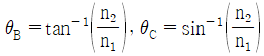
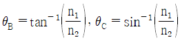
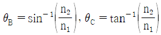
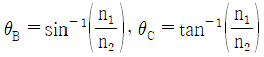
(정답률: 88%)
31. 굴절률 ns인 기판 위에 굴절률이 n1, n2인 유전체 물질(각각 L과 H로 표기)을 1/4 파장 광학 두게씩 차례로 코팅하고자 한다. ([공기|LH|기판]) 공기중에서 무반사 조건을 만족하기 위한 굴절률 관계로 옳은 것은?
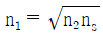
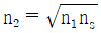
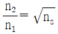
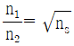
(정답률: 75%)
32. x축과 y축 방향 편광 성분이 진폭이 각각 1과 2인 타원 편광파가 x축으로부터 30° 기울어진 편광판을 통과하였다. 입사광에 대한 투과광의 강도비는?
- 0.25
- 0.35
- 0.75
- 0.86
(정답률: 31%)
33. 그림은 광섬유 측단면을 나타낸 것이다. 허용각(acceptance angle) α를 표현한 것으로 옳은 것은? (단, 코어와 클래딩의 굴절률은 각각 n1, n2 이며, 공기의 굴절률 n0는 1 이다.)
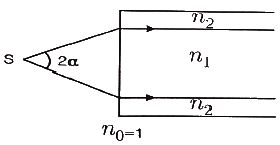
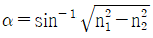
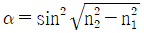
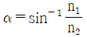
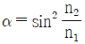
(정답률: 84%)
34. 그림과 같이 폭 0.1mm인 틈(slit)이 있는 불투명 종이에 파장 5000Å인 빛이 수직으로 비추어진다고 할 때 이 빛이 틈을 지난 뒤에는 어떻게 되겠는가?
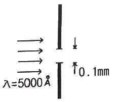
- 폭이 0.1mm인 가느다란 빛살로 계속 나아간다.
- 퍼짐각 1.0×10-3 rad 으로 위 아래로 퍼져간다.
- 퍼짐각 5×10-3 rad 으로 위 아래로 퍼져간다.
- 수렴각 1.0×10-3 rad 으로 한점에 모였다가 다시 퍼져간다.
(정답률: 47%)
35. 진공 중에서의 파장이 450nm인 빛이 굴절률 1.5인 매질을 통과할 때 매질 내에서의 파장은?
- 100nm
- 200nm
- 300nm
- 400nm
(정답률: 79%)
36. 파장 λ인 빛을 굴절율 ns인 유리판에 수직으로 비춘다. 이 유리판에 굴절율 n(n＞ns)인 물질을 광학적 두께가 λ/4가 되게 입혀 주면 빛의 반사도는 막을 입히기 전과 비교하여 어떻게 변하는가?
- 변화가 없다.
- 반사도가 높아진다.
- 반사도가 낮아진다.
- 편광상태에 따르 다르다.
(정답률: 65%)
37. 다음과 같은 푸리에(Fourier) 변환에 관한 물리적 의미가 옳은 것은? (단, 렌즈를 이용한 푸리에 변환과 연관하여 설명하며,
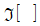
는 푸리에 변환을 의미한다.)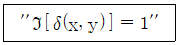
- 점광원은 평면파로 푸리에 변환된다.
- 점광원은 구면파로 푸리에 변환된다.
- 점광원은 가우시안파로 푸리에 변환된다.
- 점광원은 점광원파로 푸리에 변환된다.
(정답률: 65%)
38. 이중슬릿을 이용한 Young의 간섭실험에서 슬릿 사이의 간격은 0.5mm, 슬릿과 스크린 사이의 거리는 1m, 사용된 빛의 파장은 600nm일 때, 스크린에 생긴 간섭무늬를 사이의 거리는 1.2mm 이었다. 한쪽 슬릿의 뒤에 굴절률 1.5, 두께 0.01mm의 유리를 설치했을 때 간섭무늬가 이동하는 거리는?
- 0.5cm
- 1cm
- 1.5cm
- 5cm
(정답률: 56%)
39. 굴절률이 n인 비누막이 공기 중에 있을 때 파장이 λ인 광파가 수직으로 입사 후 비누막 윗면과 아랫면에서 반사하였다. 이 두 반사광이 1차 보강간섭을 일으키기 위한 비누막의 광학적 두께는?
- λ
- λ/2
- λ/4
- λ/8
(정답률: 77%)
40. 직경 1mm인 원형구멍에 500nm의 레이저광을 비추었다. 이 때 원형구멍으로부터 2m 떨어진 스크린 중앙에 생기는 가장 밝은 에어리(Airy) 원판의 반지름은?
- 1.22mm
- 12.2mm
- 2.44mm
- 24.4mm
(정답률: 70%)
3과목: 광학계측과 광학평가
41. 굴절률이 nH인 물질과 nL인 물질을 교대로 주기적으로 쌓아 고반사율 다층 박막을 만들 수 있다. nH ＞ nL 일 때, 공기 중의 파장 λ에 대해 반사율을 크게 만들려면 각 물질의 두께는 얼마인가?
- nH인 물질의 두께 = λ/4,
nL인 물질의 두께 = λ/4 - nH인 물질의 두께 = λ/(4nH),
nL인 물질의 두께 = λ/(4nL) - nH인 물질의 두께 = λ/2,
nL인 물질의 두께 = λ/2 - nH인 물질의 두께 = λ/(2nH),
nL인 물질의 두께 = λ/(2nL)
(정답률: 41%)
42. 빛이 공기 중에서 굴절률 n인 물질로 수직 입사했을 때 반사율(reflectance)의 값은?
- (n-1) / (n+1)
- (n-1)2 / (n+1)2
- (n+1) / (n-1)
- (n+1)2 / (n-1)2
(정답률: 63%)
43. 광학유리는 렌즈 또는 프리즘 등을 이용하여 광학계에서 상을 전달할 때 사용되는데, 이때 상의 결함을 수차라 부른다. 자이델(Seidel)의 5가지 수차에 해당하지 않는 것은?
- 구면수차
- 코마수차
- 왜곡수차
- 광선수차
(정답률: 70%)
44. 굴절률이 1.45인 평유리 4장을 겹쳐 포개면 입사에너지의 약 몇 %가 투과 하는가? (단, 유리의 의한 흡수는 무시하며, 유리-공기의 투과율은 공기-유리의 투과율과 같다고 가정한다.)
- 76%
- 87%
- 80%
- 85%
(정답률: 60%)
45. 복사세기가 I인 점광원에서 거리 R만큼 떨어진 곳의 복사입사율이 E0 일 때, 거리 2R에서의 복사 입사율은 얼마인가?
- 0.25E0
- 0.5E0
- E0
- 4E0
(정답률: 64%)
46. 대형 망원경은 대개 굴절형이 아니고 반사형이다. 그 이유에 대한 설명으로 틀린 것은?
- 대형 렌즈 보다는 대형 거울이 가공하기 용이하기 때문이다.
- 대형 렌즈 보다는 대형 거울의 무게를 줄이기가 용이하기 때문이다.
- 렌즈보다 거울을 사용함으로써 색수차를 크게 할 수 있기 때문이다.
- 대형 렌즈의 무게에 의한 망원경 통이 휘어질 가능성이 높기 때문이다.
(정답률: 64%)
47. 핀홀 카메라에 의한 상의 형태는?
- 정립허상
- 정립실상
- 도립실상
- 도립허상
(정답률: 63%)
48. 회절격자를 이용한 단색화 장치의 입력 슬릿과 출력 슬릿의 폭을 결정할 때 고려 할 사항으로 가장 중요한 것은?
- 회절격자의 크기
- 회절격자의 중심파장
- 회절격자 초점의 위치
- 회절격자의 분해능과 광의 세기
(정답률: 54%)
49. 산화물 중에서 렌지의 아베수와 굴절률을 크게 하고 무게를 가볍게 하는 주요성분은?
- PbO
- BaO
- TiO2
- B2O3
(정답률: 70%)
50. 그림과 같은 형태로 구성된 회절격자 분광사진기(Spectrograph) 형태의 명칭은?
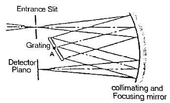
- Littrow 형
- Paschen 형
- Ebert - Fastie 형
- Czerny - Turner 형
(정답률: 62%)
51. 사진기 Auto Focusing을 위한 Active Type 삼각거리측정 방식에서 거리측정기준으로 사용되는 것은?
- 피사체 반사광량
- 피사체 반사각도
- 피사체 반사시간
- 피사체 콘트라스트
(정답률: 40%)
52. 승용차의 운전석 반대편의 사이드 거울에 관한 특성으로 옳은 것은?
- 곡면이 안으로 오목하다.
- 상은 항상 실물보다 크다.
- 거꾸로 된 상을 형성할 수 있다.
- 우리가 보는 상은 항상 허상이다.
(정답률: 64%)
53. 광학계의 입사동(entrance pupil)에 관한 설명으로 틀린 것은?
- 광학계의 첫 번째 렌즈는 항상 입사동이다.
- 주광선(chief ray)은 입사동의 중심을 지난다.
- 가장자리 광선(marginal ray)은 입사동의 가장자리를 지난다.
- 구경 조리개(aperture stop)의 앞에 있는 렌즈들에 의해 맺혀지는 구경 조리개의 상이다.
(정답률: 66%)
54. 초점거리가 16mm인 현미경 대물렌즈의 배율은 얼마인가? (단, 현미경의 경통길이는 160mm 이다.)
- 5배
- 10배
- 15배
- 20배
(정답률: 70%)
55. 다음 ( ) 안에 들어갈 내용으로 옳은 것은?
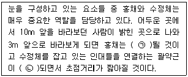
- ㉠ 확대, ㉡ 수축
- ㉠ 축소, ㉡ 수축
- ㉠ 축소, ㉡ 이완
- ㉠ 확대, ㉡ 이완
(정답률: 52%)
56. 다음 중 광학유리에서 역학적 및 열역학적 성질을 나타내는 것은?
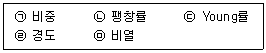
- ㉠, ㉡
- ㉠, ㉡, ㉣
- ㉠, ㉡, ㉣, ㉤
- ㉠, ㉡, ㉢, ㉣, ㉤
(정답률: 39%)
57. 렌즈로부터 10cm 떨어진 물체의 상이 렌즈의 다른 편 30cm 위치에 생겼다. 이 때 렌즈의 초점거리는 얼마인가?
- 7.5cm
- 10cm
- 15cm
- 30cm
(정답률: 44%)
58. 그림과 같은 Projection system에서 결상렌즈의 초점거리는 약 얼마인가? (단, y = 14.1mm, y′ = 1,200mm, b = 4,250mm)
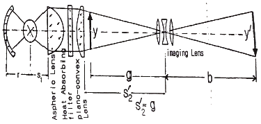
- 35.7mm
- 49.4mm
- 59.5mm
- 70.5mm
(정답률: 44%)
59. 레이저가 결정에 입사된 후 파장이 변화하여 산란되는 현상을 나타내는 것은?
- 라만(Raman) 효과
- 레일리(Rayleigh) 효과
- 뫼스바우어(Mössbauer) 효과
- 제만(zeeman) 효과
(정답률: 45%)
60. 현미경 사용 시 대물렌즈와 물체 사이에 굴절률이 큰 액체를 넣어 사용하는데 이와 관련된 설명으로 틀린 것은?
- 분해능을 높인다.
- 경계면에서 반사를 줄인다.
- 상의 콘드라스트를 향상시킨다.
- 개구수를 작게 하는 효과를 얻는다.
(정답률: 38%)
4과목: 레이저 및 광전자
61. 광축이 z축인 단축결정체(uniazial crystal)에 외부로부터 가해지는 전자장이 없는 때, 이 결정체의 굴절률-타원체의 방정식이 될 수 있는 것은? (단, 여기서 x, y, z는 결정축을 나타내며, no, ne는 각각 정상광선과 이상광선의 굴절률이다.)
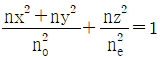
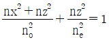
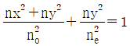
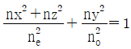
(정답률: 49%)
62. 파장이 λ인 선형 편광된 레이저 빛을 원형 편광된 레이저 빛으로 변환시키려고 할 때 사용하여야 할 광학소자는?
- λ/4 판
- λ/2 판
- λ 판
- 2λ 판
(정답률: 49%)
63. 레이저 천공의 장점으로 틀린 것은?
- 큰 깊이
- 비 접촉 가공
- 높은 열처리량
- 열영향 부위가 작음
(정답률: 50%)
64. 평면 거울과 평면 부분 반사경으로 구성된 레이저 공진기 길이가 1cm 일 때, 이 공진기에서 발진된 레이저의 종모드 주파수로 옳은 것은? (단, 공진기 내부는 진공이다.)
- 10 GHz
- 15 GHz
- 20 GHz
- 25 GHz
(정답률: 49%)
65. 파장 0.6328 μm인 He-Ne 레이저의 경우 레이저 공진기의 길이를 50cm라 할 때, 종모드의 간격은 얼마인가?
- 75 MHz
- 150 MHz
- 300 MHz
- 600 MHz
(정답률: 43%)
66. 횡모드(transverse mode)의 공간적 분포가 그림과 같은 레이저가 있다. 이 레이저의 공간 모드는?
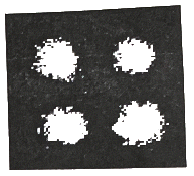
- TEM00
- TEM10
- TEM11
- TEM20
(정답률: 40%)
67. 파장이 1065nm인 네오디뮴 야그(Nd YAG) 레이저의 진동수(Hz)는?
- 2.82×1012
- 2.82×1014
- 5.35×1013
- 5.35×1015
(정답률: 52%)
68. 결정에 전압을 걸어 주었을 때 가해준 전기장의 세기에 비례하여 굴절률이 변화하는 효과는?
- Kerr 효과
- Pockels 효과
- Faraday 효과
- Cotton - Mouton 효과
(정답률: 49%)
69. 두께 L = 6.25×10-3mm의 단축 결정체(uniaxial crystal)에 그림과 같이 5000Å의 선편광된 빛이 입사되었다. 결정체를 지난 빛이 원편광되어 나온다면, 이 결정체의 λ = 5000Å에 대한 상광선과 이상광선의 굴절률의 차(△ = no - ne)는 얼마인가?
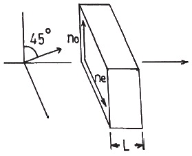
- 0.01
- 0.02
- 0.03
- 0.04
(정답률: 49%)
70. 광 결정체의 유전 텐서(dielectric tensor)는 언제나
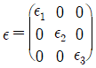
와 같이 대각화할 수 있다. 다음 중 쌍축 결정(biaxial crystal)의 경우는 어느 것인가?- ε1 = ε2 ≠ ε3
- ε1 = ε2 = ε3 ≠ 1
- ε1 ≠ ε2 ≠ ε3
- ε1 = ε2 = ε3 ≠ 0
(정답률: 38%)
71. 등방성 물질은 클로로포름에서 관찰할 수 있는 효과는?
- 커(Kerr) 효과
- 포컬스(Pockels) 효과
- 광전(photoelectric) 효과
- 광굴절(photorefractive) 효과
(정답률: 41%)
72. 파장 500nm의 이상적인 레이저 광속을 w0가 5μm가 되도록 그림과 같이 집속하였다. Beam waist에서 z만큼 떨어진 곳에서 파면의 곡률반경을 R(z)라 할 때, R(z)의 최솟값은 얼마인가?(문제 오류로 가답안 발표시 3번으로 발표되었지만 확정답안 발표시 모두 정답처리 되었습니다. 여기서는 가답안인 3번을 누르면 정답 처리 됩니다.)(모두 확정답안 처리된 이유는 실제 시험에서 그림이 누락되어서 입니다. 참고하세요.)
- 157μm
- 250μm
- 314μm
- 500μm
(정답률: 32%)
73. 빨간색을 출력하는 반도체 레이저는?
- InGaN
- InGaAsP
- ZnSSe
- AlGaInP
(정답률: 39%)
74. 굴절률 타원체(index ellipsoid) 방정식이 0.4X2 + 0.4Y2 + 0.3Z2 = 1인 매질에서 x축 방향으로 편극된 광의 굴절률은 약 얼마인가?
- 1.38
- 1.48
- 1.58
- 1.68
(정답률: 36%)
75. GaAs 반도체 재료는 실온에서 1.4eV의 에너지 밴드의 갭을 갖고 있다. GaAs를 사용한 반도체레이저의 발진파장은?
- 8⑤nm
- 886nm
- 924nm
- 975nm
(정답률: 47%)
76. 빛의 성질을 말할대 파동광학적으로만 설명되는 현상은?
- 직진
- 반사
- 굴절
- 회절
(정답률: 48%)
77. 엑시머 레이저의 종류와 발진 파장의 연결이 틀린 것은?
- Ar2 - 126nm
- ArF - 193nm
- Xe2 - 222nm
- KrF – 248nm
(정답률: 48%)
78. 레이저 출력을 높이는 방법 중 모드잠금(mode-locking)이 있다. 이 방법은 어느 부분에 해당되는가?
- 광변조(optical modulation)
- 광여기(optical excitation)
- 광합성(optical mixing)
- 광산란(optical scattering)
(정답률: 41%)
79. 파장이 λ인 레이저의 선폭이 △λ이고, 이 레이저의 가간섭 길이(coherence length)가 lc 일 때, △λ×lc와 같은 양을 표현한 것은?
- 1
- λ
- λ2
- λ3
(정답률: 56%)
80. 서로 다른 두 레이저의 발진파장이 각각 0.5μm 와 1.06μm이다. 두 레이저 빛을 자유공간 내에서 서로 중첩시켰을 때 중첩된 부분에서 일어나는 현상으로 옳은 것은?
- 0.56μm 인 빛이 생성된다.
- 1.06μm 인 빛이 소멸된다.
- 1.56μm 인 빛이 생성된다.
- 새로운 파장의 빛은 생성되지 않는다.
(정답률: 42%)
광선은 파면에 수직 방향으로 진행하지 않을 수도 있습니다. 예를 들어, 빛이 한 매질에서 다른 매질로 들어갈 때, 광선은 경로를 바꿔 굴절됩니다. 이 때 광선은 파면에 수직 방향으로 진행하지 않습니다.
따라서, 광선의 경로는 모든 매질들에서 항상 직선 경로이지만, 광선이 파면에 수직 방향으로 진행한다는 것은 항상 참인 것은 아닙니다.